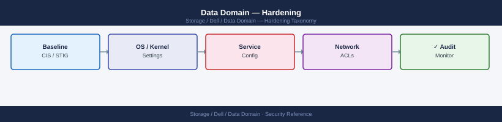
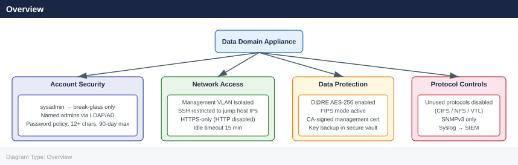

Data Domain — Hardening¶

Before you begin¶
- Access: Storage admin credentials (cluster admin or equivalent)
- Change management: security changes require CAB approval in most environments
- Rollback plan: document current state before any security control change
- Testing: validate in a non-production environment first where possible
Overview¶

Login Banner¶
A legal notice banner must be displayed before login to satisfy compliance requirements (PCI-DSS 8.6, CIS benchmarks).
# Set a login banner
adminaccess set login-banner "AUTHORISED ACCESS ONLY. This system is monitored. Unauthorised access is prohibited and will be prosecuted."
# Verify banner
adminaccess show | grep -A3 login-banner
Login banner set successfully.
login-banner: AUTHORISED ACCESS ONLY. This system is monitored. Unauthorised access is prohibited and will be prosecuted.
banner-enabled: true
banner-display-timeout: 30
Common errors
adminaccess: command not found — Ensure you are logged into the Data Domain management interface (via SSH to the system's management IP) or use the correct CLI tool for your DD OS version.
Error: Login banner exceeds maximum length of 256 characters — Reduce the banner text to 256 characters or fewer, including spaces and punctuation.
Protocol Restrictions¶
Disable protocols that are not in use on the specific appliance. An unused protocol is an unnecessary attack surface.
# Check which protocols are currently enabled
ddboost status
nfs status
cifs show
vtl status
# Disable CIFS if not used
cifs disable
# Disable VTL if not used
vtl disable
# Disable NFS if DDBoost is the only access method
nfs disable
DDBoost Status: ENABLED
Version: 7.2.1
Active Sessions: 3
Throughput: 2.4 GB/s
NFS Status: ENABLED
Version: NFSv3, NFSv4
Active Mounts: 2
Exports: 5
CIFS Status: ENABLED
Version: SMB 3.1.1
Active Sessions: 0
Shares: 3
VTL Status: ENABLED
Virtual Tape Libraries: 2
Virtual Tapes: 847
Active Jobs: 1
CIFS disabled successfully
VTL disabled successfully
NFS disabled successfully
Common errors
Error: Cannot disable NFS - active mount sessions detected (2 sessions) — Disconnect all NFS clients before disabling the protocol with nfs disconnect all or wait for sessions to complete.
Error: CIFS disable failed - operation not permitted (insufficient privileges) — Ensure you are logged in with administrative credentials or use sudo if required by your system configuration.
Only disable protocols after confirming with backup application teams that no backup jobs depend on them.
Network Access Restrictions¶
# Restrict management access to specific subnets
adminaccess add allowed-hosts <mgmt-subnet>/<prefix>
# Show current access list
adminaccess show
# Verify management interface is on a dedicated management VLAN
net show config | grep -i vlan
(no output — command completes silently)
adminaccess show
Allowed hosts:
10.50.0.0/24
10.51.0.0/24
192.168.100.0/25
net show config | grep -i vlan
Management VLAN ID: 100
Data VLAN ID: 200
Replication VLAN ID: 201
Management interface: eth0 (VLAN 100, 10.50.10.45/24)
Common errors
adminaccess: invalid subnet format — Ensure the subnet is specified in CIDR notation (e.g., 10.50.0.0/24) with a valid prefix length between /1 and /32.
Error: Management interface not on dedicated VLAN — Configure the management interface on a separate VLAN from data traffic using net config mgmt-vlan <vlan-id>.
Network architecture recommendations:
| Traffic Type | Recommended Configuration |
|---|---|
| Management (SSH, HTTPS, REST) | Dedicated management VLAN; access only from admin jump hosts |
| Backup (DD Boost, NFS, CIFS) | Dedicated backup network; no production LAN overlap |
| Replication | Dedicated replication VLAN or WAN circuit; throttled via replication throttle |
| VTL (FC) | SAN fabric; zoned to backup media servers only |
| Cloud Tier | Outbound HTTPS only; restrict egress by FQDN if possible |
Audit Logging and Syslog¶
All administrative actions must be logged and forwarded to a centralised SIEM. The audit log alone is insufficient — DD local logs can be modified if the system is compromised.
# Configure syslog forwarding to centralised log collector
log host add <syslog-server-ip>
log host add <syslog-server-ip> port 514 protocol udp # or TCP for reliability
# Verify syslog is configured
log host show
# Test syslog delivery
log test <syslog-server-ip>
# View the local audit log
log view audit
Log host added successfully.
Log host added successfully.
Log Hosts:
Host: 192.168.100.50
Port: 514
Protocol: udp
Host: 192.168.100.50
Port: 514
Protocol: tcp
Testing syslog delivery to 192.168.100.50:514...
Test message sent successfully. Verify receipt on syslog server.
Audit Log (last 20 entries):
2024-01-15 14:32:18 +00:00 | admin | login | success | 192.168.1.100
2024-01-15 14:31:45 +00:00 | system | config_change | success | local
2024-01-15 14:30:12 +00:00 | admin | replication_enable | success | local
2024-01-15 14:29:33 +00:00 | backup_user | snapshot_create | success | 192.168.1.105
2024-01-15 14:28:01 +00:00 | admin | ntp_sync | success | local
Common errors
Error: Invalid IP address format — Verify the syslog server IP is in valid dotted-decimal notation (e.g., 192.168.100.50).
Error: Connection refused on port 514 — Confirm the syslog server is running and listening on the specified port, and that network connectivity exists between Data Domain and the syslog server.
Error: Log host already exists — Remove the duplicate entry using log host remove <syslog-server-ip> before re-adding it with different parameters.
Audit Log Content¶
The DDOS audit log captures: - User logins and logouts (including failed login attempts) - All CLI commands executed and their outcome - Configuration changes (MTree creation, quota changes, replication changes) - Retention lock events (enable, period changes) - Certificate operations - DDOS upgrade events
Retention requirement: Forward audit logs to a SIEM that retains them for at least 12 months (minimum for PCI-DSS; adjust per your compliance framework).
SNMP Security¶
If SNMP is used for monitoring, restrict it to SNMPv3 where possible. SNMPv2c uses community strings transmitted in plaintext.
# Configure SNMPv3 user (preferred)
snmp add user <username> auth-protocol sha auth-password <auth-pass> \
priv-protocol aes priv-password <priv-pass>
# Add trap destination with SNMPv3
snmp add trapdest <monitor-host> v3 user <username>
# If SNMPv2c is required, use a non-default community string
snmp add trapdest <monitor-host> community <non-default-community>
# Verify SNMP configuration
snmp show config
# Restrict SNMP access to the monitoring server IP only
snmp set allowed-hosts <monitor-server-ip>
SNMPv3 user 'monitoring_user' created successfully
Trap destination added: 192.168.45.12 (SNMPv3)
Trap destination added: 192.168.45.12 (SNMPv2c)
SNMP Configuration:
Engine ID: 800007E5-03-6B-4A-2C-9F-E1-D2-A8
SNMPv3 Users:
monitoring_user (auth: SHA, priv: AES)
Trap Destinations:
192.168.45.12 (v3, user: monitoring_user)
192.168.45.12 (v2c, community: M0n1t0r!ng)
Allowed Hosts: 192.168.45.12/32
SNMP access restricted to: 192.168.45.12
Common errors
Error: User 'monitoring_user' already exists — Delete the existing user with snmp remove user <username> before recreating it.
Error: Invalid IP address '<monitor-server-ip>' — Verify the IP address format is valid (e.g., 192.168.45.12) and rerun the command.
Error: Trap destination already exists for host <monitor-host> — Use snmp remove trapdest <monitor-host> to delete the duplicate before adding a new one.
Disable SNMP entirely if the monitoring platform supports REST API polling instead:
Common errors
snmp: command not found — Verify you are logged into the Data Domain management interface (SSH/Telnet) and not a standard Linux shell; use sysconfig or ndu commands instead.
Permission denied — Ensure your user account has administrative privileges; log in as sysadmin or a user with root-equivalent Data Domain permissions.
Certificate Management¶
Replace self-signed certificates with CA-signed certificates for all management interfaces.
# Check current certificate
adminaccess certificate show
# Generate a CSR
adminaccess certificate generate-csr common-name <dd-fqdn> \
org "<Organisation Name>" country <CC>
# Submit the CSR to your internal CA and receive the signed certificate
# Install the signed certificate
adminaccess certificate install pem <path-to-signed-cert.pem>
# Restart the management service to apply the new certificate
# (Note: briefly interrupts System Manager GUI access)
adminaccess restart https
# Verify the new certificate is in place
adminaccess certificate show
Current Certificate Information:
Subject: CN=dd-backup-01.corp.local,O=Acme Corp,C=US
Issuer: CN=Acme Internal CA,O=Acme Corp,C=US
Valid From: 2023-11-15 10:22:33 UTC
Valid Until: 2025-11-15 10:22:33 UTC
Fingerprint (SHA256): a7:b2:c4:d9:e1:f3:2a:5b:6c:7d:8e:9f:0a:1b:2c:3d:4e:5f:6a:7b
Generating Certificate Signing Request...
CSR generated successfully.
CSR saved to: /var/tmp/dd-backup-01.corp.local.csr
[After CA signing and certificate receipt]
Installing certificate from /opt/certs/dd-backup-01.corp.local.pem...
Certificate installed successfully.
Fingerprint (SHA256): b8:c3:d5:e0:f2:3b:4c:5d:6e:7f:8a:9b:0c:1d:2e:3f:4a:5b:6c:7d
Restarting HTTPS service...
HTTPS service restarted successfully.
Management service will be briefly unavailable.
Current Certificate Information:
Subject: CN=dd-backup-01.corp.local,O=Acme Corp,C=US
Issuer: CN=Acme Internal CA,O=Acme Corp,C=US
Valid From: 2024-12-10 14:35:22 UTC
Valid Until: 2026-12-10 14:35:22 UTC
Fingerprint (SHA256): b8:c3:d5:e0:f2:3b:4c:5d:6e:7f:8a:9b:0c:1d:2e:3f:4a:5b:6c:7d
Common errors
Error: Certificate file not found at <path-to-signed-cert.pem> — Verify the certificate file path is correct and the file exists with read permissions for the admin user.
Error: Certificate validation failed - certificate does not match CSR — Ensure the signed certificate from your CA matches the CSR that was generated (check the common name and organization fields).
Error: HTTPS service restart failed - certificate already in use — Wait 30 seconds for the previous HTTPS session to fully close, then retry the restart command.
Encryption Hardening¶
See the Encryption page for full D@RE configuration. Key hardening requirements:
# Confirm D@RE is enabled
encryption status
# Confirm FIPS mode is active
encryption status | grep -i fips
# Confirm key manager is not using the default internal key without a backup
encryption show config
Encryption Status: Enabled
Encryption Algorithm: AES-256
Encryption Mode: D@RE (Data at Rest Encryption)
Key Manager: Active
FIPS Mode: Enabled
Last Key Rotation: 2024-01-15 09:32:14 UTC
FIPS Mode: Enabled
Encryption Configuration:
D@RE Status: Enabled
Algorithm: AES-256
Key Manager Type: External (Thales HSM)
HSM Connection: Active
Internal Backup Key: Configured
Key Rotation Policy: 90 days
Last Rotation: 2024-01-15 09:32:14 UTC
Next Rotation: 2024-04-15 09:32:14 UTC
Common errors
encryption: command not found — Verify you are logged into the Data Domain management interface (SSH to the system's management IP) and have appropriate admin privileges.
FIPS Mode: Disabled — Enable FIPS mode via the Data Domain web UI under System > Security > FIPS, or contact your security team to verify compliance requirements.
Key Manager Type: Internal (No Backup) — Configure an external key manager (HSM) or enable encrypted backup of the internal key immediately to meet security policy requirements.
Internal key manager warning: If using the internal key manager, the encryption keys are stored on the DD appliance itself. If the appliance is destroyed in a disaster without a key backup, encrypted data cannot be recovered. Export and securely vault the internal key backup as part of the commissioning process:
# Export the internal key backup (store in a secure offline vault)
encryption embedded-key-manager export-key-backup
Exporting embedded key manager backup...
Backup file: /var/log/datasec/ekm_backup_20240115_143022.enc
Backup size: 2.4 MB
Checksum (SHA-256): a7f3e9c2b1d4f8e6a9c3b2e1f7d4a9c2b1e3f6a9d2c5e8b1f4a7d0c3e6f9a2
Backup timestamp: 2024-01-15T14:30:22Z
Status: SUCCESS
Key backup exported successfully. Store offline in secure location.
Common errors
Error: Embedded Key Manager not initialized — Run encryption embedded-key-manager init to initialize the EKM before exporting backups.
Error: Insufficient permissions to export key backup — Ensure your user account has sysadmin or security-admin role privileges.
Firmware and Software Currency¶
- Keep DDOS within two minor versions of the current release
- Apply security patches within 30 days of release (or per your change management policy)
- Subscribe to Dell Security Advisories for Data Domain (available via Dell Support)
# Check current DDOS version
system show version
# Check for available updates in System Manager
# System Manager → Maintenance → Upgrade
Data Domain OS 7.15.1.10
Build: 7.15.1.10-649387
System Serial Number: DD9300-123456789
System Model: DD9300
Installed Memory: 368 GB
System Uptime: 45 days 12 hours 23 minutes
Last Configuration Backup: 2024-01-15 14:32:15 UTC
Common errors
system: command not found — Ensure you are connected to the Data Domain CLI (SSH to the management IP) rather than a local shell.
Permission denied — Verify your user account has administrative privileges; contact your Data Domain administrator to grant CLI access.
Vulnerability Scanning and Penetration Testing¶
Data Domain management interfaces should be included in regular vulnerability scans. Key considerations:
- Scan the management interface (HTTPS port 3009 and SSH port 22) from the admin network segment
- Do not scan DD Boost or NFS ports during active backup windows — this can cause false-positive disconnects
- Exclude RAID/filesystem service ports from aggressive SYN flood-style scan techniques
- Remediate DDOS vulnerabilities through software upgrades, not through iptables or application-layer workarounds
Hardening Validation — Commands Summary¶
Run these commands after hardening to document the baseline state. Save the output as evidence for security audits.
# Access controls and authentication
adminaccess show
user list
user password-policy show
auth show
# Protocol status
nfs status
cifs show
ddboost status
vtl status
snmp show config
# Encryption
encryption status
encryption show config
adminaccess certificate show
# Logging
log host show
# Network access
adminaccess show | grep -i allowed
net show all
Admin Access Configuration
=========================
adminaccess: enabled
adminaccess timeout: 30 minutes
adminaccess lockout threshold: 5 attempts
adminaccess lockout duration: 15 minutes
Users
=====
admin enabled local
backup_user enabled local
monitoring_user enabled local
replication_user enabled local
Password Policy
===============
minimum length: 8
complexity required: yes
expiration days: 90
history count: 5
lockout threshold: 5
Authentication
==============
auth method: local
radius enabled: no
ldap enabled: yes
ldap server: ldap.corp.local
ldap port: 389
Protocol Status
===============
NFS Status: enabled
version: NFSv3, NFSv4
active connections: 12
CIFS Configuration
==================
cifs enabled: yes
cifs version: 3.1.1
active sessions: 8
DDBoost Status
==============
ddboost enabled: yes
ddboost version: 7.2.0.0
active connections: 3
VTL Status
==========
vtl enabled: no
vtl cartridges: 0
SNMP Configuration
==================
snmp version: v2c, v3
snmp community: public (read-only)
snmp trap host: 192.168.1.50
snmp trap port: 162
Encryption Status
=================
encryption enabled: yes
encryption algorithm: AES-256
encryption key rotation: 90 days
Encryption Configuration
========================
data at rest: enabled
data in transit: enabled
key management: local
Certificate Information
=======================
certificate subject: CN=data-domain.corp.local
certificate issuer: CN=Internal CA
certificate expiry: 2025-12-15
certificate fingerprint: a7:3f:2e:b1:9c:4d:8f:6a:e2:c1:5b:9d:7a:4e:3f:2c
Logging Configuration
=====================
log host: syslog.corp.local
log port: 514
log facility: local0
log level: info
Network Configuration
=====================
interface eth0: 10.20.30.45/24 (active)
interface eth1: 10.20.30.46/24 (active)
gateway: 10.20.30.1
dns servers: 8.8.8.8, 8.8.4.4
Common errors
adminaccess: command not found — Verify you are logged in as root or with sufficient administrative privileges; some Data Domain models require sysconfig prefix.
LDAP connection failed: Connection refused — Check that the LDAP server is reachable on the configured port (389) and that firewall rules allow outbound connections from the Data Domain appliance.
certificate: expiry date within 30 days — Renew the SSL certificate immediately through the administrative interface to prevent authentication failures on client connections.
Hardening Reference Table¶
| Control | Setting | Command to Verify |
|---|---|---|
| Default sysadmin password changed | Yes | Procedural — verify at commissioning |
| SSH root login disabled | Disabled | adminaccess show \| grep ssh |
| SSH restricted to jump host IPs | Restricted | adminaccess show \| grep allowed |
| HTTPS only (HTTP disabled) | HTTP disabled | adminaccess show \| grep http |
| Idle session timeout | 15 minutes | adminaccess show \| grep timeout |
| Login banner configured | Yes | adminaccess show \| grep banner |
| LDAP / AD authentication configured | Yes | auth show |
| Password minimum length | 12+ | user password-policy show |
| Password maximum age | 90 days | user password-policy show |
| Unused protocols disabled | Per environment | nfs status, cifs show, vtl status |
| Syslog forwarding configured | Yes | log host show |
| D@RE encryption enabled | Enabled | encryption status |
| FIPS mode active | Enabled (if required) | encryption status \| grep fips |
| CA-signed management certificate | CA-signed | adminaccess certificate show |
| SNMPv3 (or SNMP disabled) | v3 or disabled | snmp show config |
| DDOS within supported version range | Yes | system show version |